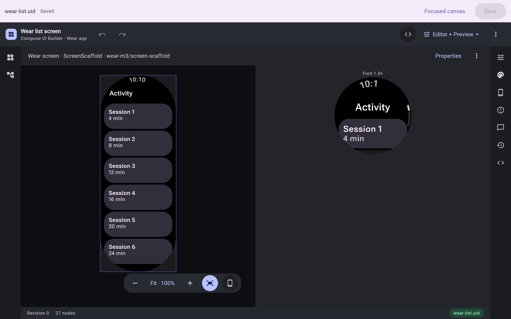
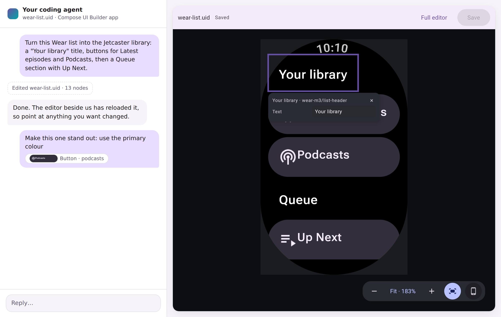
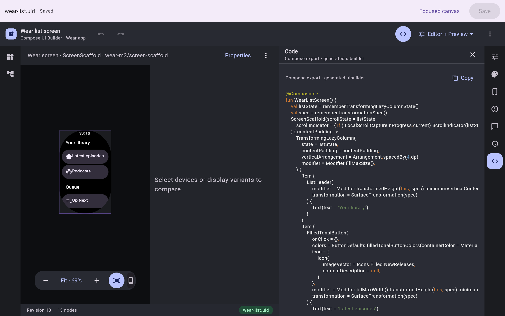
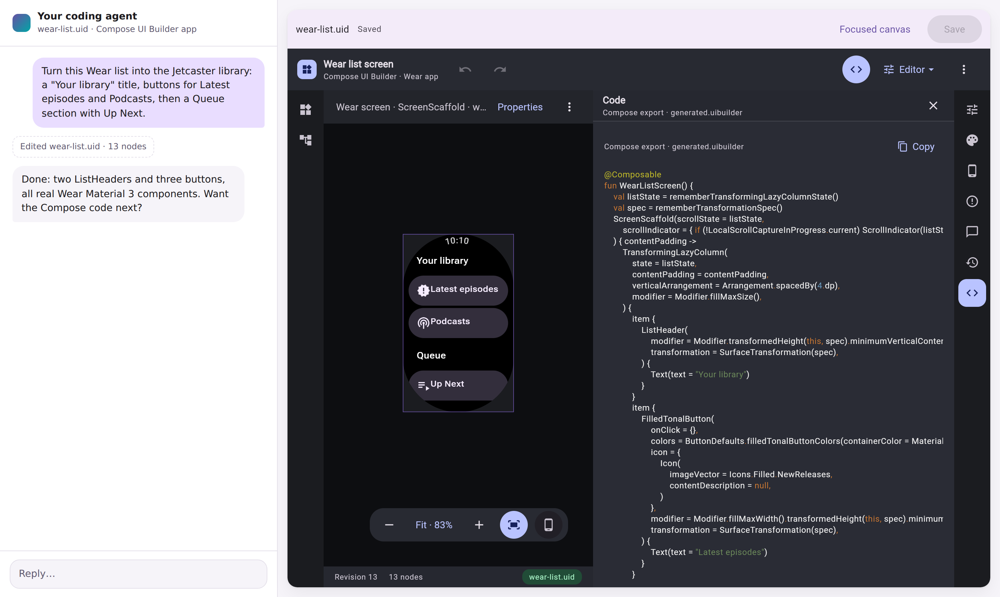
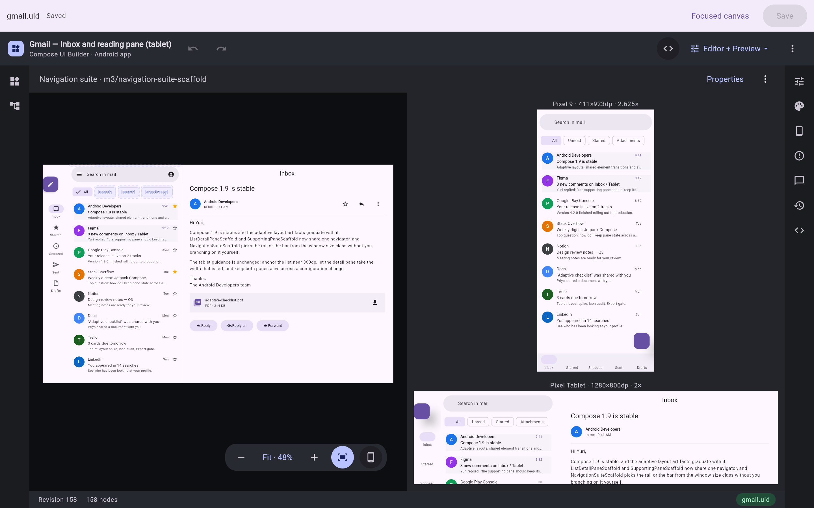

Real components, not mockups
The canvas renders compiled Material 3 and Wear Material 3 composables. What you see is what Compose draws.
For Jetpack Compose & Compose Multiplatform
A visual editor for real, compiled Compose components that works hand in hand with your coding agent. Three steps from idea to code you can ship:

Pick a Wear list screen, a phone scaffold or a Wear widget. The full, unrolled screen sits on the left, with instant interactive previews on the right.

Describe the screen and watch the edit land. Then right-click anything: comment, and your note reaches the chat with that element attached, or Quick edit its properties in place.

Copy readable Compose code for your app, SVG that pastes into Figma as editable layers, or a PNG for review.
The agent works on the same saved design you see. Every pixel on the canvas is drawn by Compose itself, and the export is the Kotlin that draws it.

Everything runs on the hosted service at preview.coo.ee. The only setup is one line for your agent.
claude mcp add --transport http compose-preview-catalog https://preview.coo.ee/mcpAdd to ~/.codex/config.toml:
[mcp_servers.compose-preview-catalog]
url = "https://preview.coo.ee/mcp"Any Streamable HTTP MCP client. For Cursor, .cursor/mcp.json:
{
"mcpServers": {
"compose-preview-catalog": { "type": "http", "url": "https://preview.coo.ee/mcp" }
}
}Restart your agent so it picks the server up. Already using the
Compose plugins? Their
compose-catalogs plugin is this same server, so skip this step.
Open preview.coo.ee/ui-builder, sign in with GitHub, choose New design and pick a template, such as the Wear list screen.
Press Copy prompt for your agent in the editor's toolbar, paste it into your agent, and say what you want:
<the copied prompt>
Turn it into a podcast library with "Latest episodes" and "Podcasts" buttons,
then a Queue section with Up Next.The prompt names the design and the server and tells the agent to ask for its own access, which you approve in the browser. No token is ever pasted. Keep the editor open beside the chat: the agent's edits appear as it makes them.
Prefer to work locally or offline? The desktop app, the IntelliJ plugin, the
VS Code extension (early access)
and compose-preview-server ui keep designs as .uid files in your
repository.
See running it locally.
The canvas renders compiled Material 3 and Wear Material 3 composables. What you see is what Compose draws.
Browser, IDE and agent edits all go through one revisioned design, so changes arrive live wherever it is open.
Comments carry the node, its properties and a picture into the chat. No more describing which button you mean.
Get idiomatic Kotlin that calls real components, or your own project's composables when you point it at your module.
Design adaptive phone and tablet screens, Wear OS screens, and Wear widgets built on Remote Compose.
A design is a .uid file. Review it in a pull request with rendered before/after images, not JSON diffs.
Export any saved revision as SVG for design review, pinned to the exact catalog it was built with.
Web, a native desktop app, IntelliJ, VS Code, or inside your agent's chat as an MCP App.
